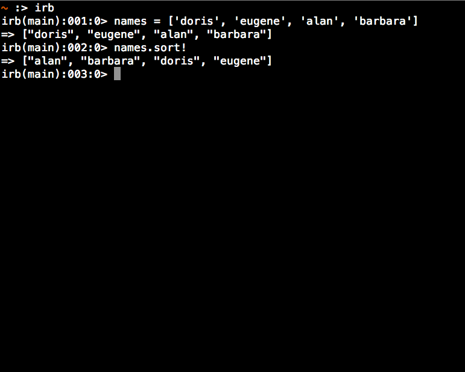
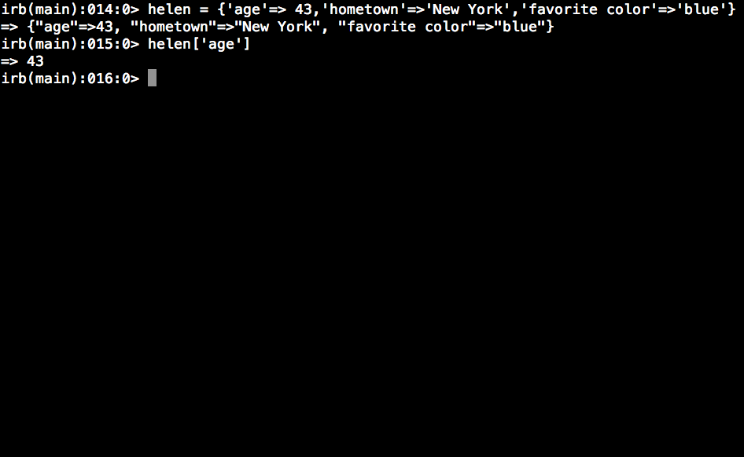

Hashes and Arrays
some differences
01/28/15
Ruby's hashes and arrays make programming easier because they allow you to store things away and to retrieve them when needed. The fundamental difference debtween arrays and hashes has to do with how you retrieve what you need from them.
An array contains objects which you can retrieve via an index starting at 0 and going for as long as the list is. So if you had an array like this:
[1, 2, 3, 4, 5]
and you called 0 on the array like this:
array[0]
then you would get the first number in the array, 1. If you called
array[2]
you would get 3, and so on.
Instead of an index, a hash has what are called 'key value pairs'. A hash could look like this:
{'NC'=>'North Carolina', 'SC'=>'South Carolina', 'TN'=>'Tennessee'}
In order to access North Carolina, you would have to call it with its key NC:
hash['NC']
The objects in a hash have no order since they only correspond with their individual keys.
The order of an array does matter however, and there are several methods that can take advantage, and change the order of arrays.
Broadly speaking, arrays come in handy when organization is easily applicable to the objects inside and needed for the situation in which you want to use the objects. While hashes are more useful for situations in which little organization is needed and less easily imposed.
For example, if you needed to organize names aphabetically, you would want to use an array because there is an easy method to do that with an array.
names = ['doris', 'eugene', 'alan', 'barbara']
With
.sort!
you can permanantly alter the list to be sorted aphabetically.
If you wanted to access information about each individual, you may want to make a hash for each one.
For example:
helen = {'age'=>43,'hometown'=>'New York','favorite color'=>'blue'
Now you will be able to access specific information about helen with different keys. But there would be little or no reason to alphabetize this information like we we could do with a list, and a key makes more sense rather than some number on an index.
